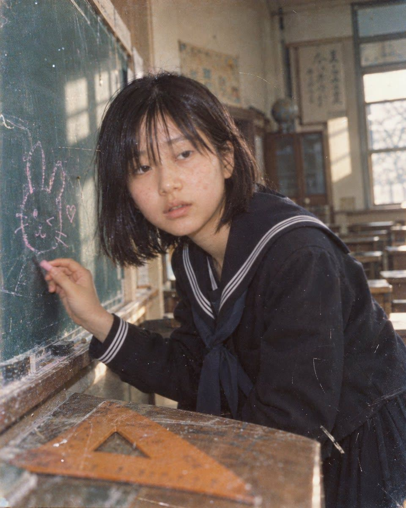

Nostalgic Schoolgirl Drawing on Chalkboard
GRN-003Grain / FilterGPT Image 2by 拓斗October 6,

A cinematic portrait of a Japanese schoolgirl drawing a rabbit on a chalkboard in an empty classroom, featuring vintage film grain and soft lighting.
Prompt
A vertical, medium-shot photograph with a nostalgic film aesthetic captures a young Asian female student in an empty classroom. She has short, dark bobbed hair with bangs and wears a traditional navy blue sailor-style school uniform (seifuku) with white stripes on the collar and cuffs. Her expression is calm and slightly melancholic as she looks directly at the camera. She stands beside a green chalkboard, holding a piece of pink chalk in her right hand, having just drawn a cute cartoon rabbit face with a heart next to it. In the foreground, resting on a worn wooden desk, is a large orange triangular ruler. The background features rows of empty wooden desks and chairs, tall windows letting in soft natural light, and blurred calligraphy posters on the far wall. The image has visible film grain, dust specks, and scratches, enhancing the retro atmosphere.
Tags: 35mm film, 9:16 vertical